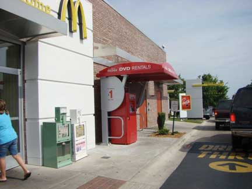

Selecting the best marketing channel is critical because it can mean the success or failure of your product. One of the reasons the Internet has been so successful as a marketing channel is because customers get to make some of the channel decisions themselves. They can shop virtually for any product in the world when and where they want to, as long as they can connect to the Web. They can also choose how the product is shipped.
The Internet isn’t necessarily the best channel for every product, though. For example, do you want to closely examine the fruits and vegetables you buy to make sure they are ripe enough or not overripe? Then online grocery shopping might not be for you. Clearly, how your customers want to buy products will have an impact on the channel you select. In fact, it should be your prime consideration.
First of all, are you selling to a consumer or a business customer? Generally, these two groups want to be sold to differently. Most consumers are willing to go to a grocery or convenience store to purchase toilet paper. The manager of a hospital trying to replenish its supplies would not. The hospital manager would also be buying a lot more toilet paper than an individual consumer and would expect to be called upon by a distributor, but perhaps only semiregularly. Thereafter, the manager might want the toilet paper delivered on a regular basis and billed to the hospital via automatic systems. Likewise, when businesses buy expensive products such as machinery and computers or products that have to be customized, they generally expect to be sold to personally via salespeople. And often they expect special payment terms.
The type of product you’re selling will also affect your marketing channel choices. Perishable products often have to be sold through shorter marketing channels than products with longer shelf lives. For example, a yellowfin tuna bound for the sushi market will likely be flown overnight to its destination and handled by few intermediaries. By contrast, canned tuna can be shipped by “slow boat” and handled by more intermediaries. Valuable and fragile products also tend to have shorter marketing channels. Automakers generally sell their cars straight to car dealers (retailers) rather than through wholesalers. The makers of corporate jets often sell them straight to corporations, which demand they be customized to certain specifications.
Your ability versus the ability of other types of organizations that operate in marketing channels can affect your channel choices. If you are a massage therapist, you are quite capable of delivering your product straight to your client. If you produce downloadable products like digital books or recordings, you can sell your products straight to customers on the Internet. Hypnotic World, a UK producer of self-hypnosis recordings, is such a company. If you want to stop smoking or lose weight, you can pay for and download a recording to help you do this at http://www.hypnoticworld.com.
But suppose you’ve created a great new personal gadget—something that’s tangible, or physical. You’ve managed to sell it via two channels—say, on TV (via the Home Shopping Network, perhaps) and on the Web. Now you want to get the product into retail stores like Target, Walgreens, and Bed Bath & Beyond. If you can get the product into these stores, you can increase your sales exponentially. In this case, you might want to contract with an intermediary—perhaps an agent or a distributor who will convince the corporate buyers of those stores to carry your product.
The general business environment, such as the economy, can also affect the marketing channels chosen for products. For example, think about what happens when the value of the dollar declines relative to the currencies of other countries. When the dollar falls, products imported from other countries cost more to buy relative to products produced and sold in the United States. Products “made in China” become less attractive because they have gotten more expensive. As a result, some companies then look closer to home for their products and channel partners.
Technological changes affect marketing channels, too, of course. We explained how the Internet has changed how products are bought and sold. Many companies like selling products on the Internet as much as consumers like buying them. For one, an Internet sales channel gives companies more control over how their products are sold and at what prices than if they leave the job to another channel partner such as a retailer. Plus, a company selling on the Internet has a digital footprint, or record, of what shoppers look at, or click on, at its site. As a result, it can recommend products they appear to be interested in and target them with special offers and even prices.“Pizza Hut’s Online Ordering Called ‘Virtual Waiter,’” The Food Channel, http://www.foodchannel.com/stories/421-pizza-hut-s-online-ordering-called-virtual-waiter (accessed December 12, 2009).
Some sites let customers tailor products to their liking. On the Domino’s Web site, you can pick your pizza ingredients and then watch them as they fall onto your virtual pizza. The site then lets you know who is baking your pizza, how long it’s taking to cook, and who’s delivering it. Even though interaction is digital, it somehow feels a lot more personal than a basic phone order. Developing customer relationships is what today’s marketing is about. The Internet is helping companies do this.
How your competitors sell their products can also affect your marketing channels. As we explained, Dell now sells computers to firms like Best Buy so the computers can compete with other brands on store shelves.
You don’t always have to choose the channels your competitors rely on, though. Netflix is an example. Netflix turned the video rental business on its head by coming up with a new marketing channel that better meets the needs of many consumers. Beginning with direct mail and then moving to Internet delivery, Netflix (along with competitor Hulu) may end up revolutionizing the way television is watched. With the exception of sports and other live events, television will move to an “on-demand” model, where you will watch what you want when you want, not when it is broadcast. Along the way, though, Netflix (and Redbox, the video vending machine) has already virtually eliminated DVD rental through stores. Maybelline and L’Oréal products are sold primarily in retail stores. However, Mary Kay and Avon use salespeople to personally sell their products to consumers.
Firms that choose an intensive distributionA strategy of selling a product in as many outlets as possible. strategy try to sell their products in as many outlets as possible. Intensive distribution strategies are often used for convenience offerings—products customers purchase on the spot without much shopping around. Soft drinks and newspapers are an example. You see them sold in all kinds of different places. Redbox, which rents DVDs out of vending machines, has made headway using a distribution strategy that’s more intensive than Blockbuster’s: the machines are located in fast-food restaurants, grocery stores, and other places people go frequently. The strategy has been so successful, Blockbuster has had to retaliate with its own line of vending machines, though it may be too little too late.
Figure 8.15
Because installing a vending machine is less expensive than opening a retail outlet, Redbox has been able to locate its DVD vending machines in more places than Blockbuster can its stores. Blockbuster has responded with its own vending machines.
By contrast, selective distributionA strategy of selling products at specific outlets and/or locations. involves selling products at select outlets in specific locations. For instance, Sony TVs can be purchased at a number of outlets such as Circuit City, Best Buy, or Walmart, but the same models are generally not sold at all the outlets. The lowest-priced Sony TVs are at Walmart, the better Sony models are more expensive and found in stores like Circuit City or specialty electronics stores. By selling different models with different features and price points at different outlets, a manufacturer can appeal to different target markets. You don’t expect, for example, to find the highest-priced products in Walmart; when you shop there, you are looking for the lower-priced goods.
Exclusive distributionA strategy of selling products through one or a few retailers in a specific location. involves selling products through one or very few outlets. Most students often think exclusive means high priced, but that’s not always the case. Exclusive simply means limiting distribution to only one outlet in any area, and can be a strategic decision based on applying the scarcity principle to creating demand. For instance, supermodel Cindy Crawford’s line of furniture is sold exclusively at the furniture company Rooms To Go. Designer Michael Graves has a line of products sold exclusively at Target. To purchase those items you need to go to one of those retailers. In these instances, retailers are teaming up with these brands in order to create a sense of quality based on scarcity, a sense of quality that will not only apply to the brand but to the store.
TV series are distributed exclusively. In this instance, the choice isn’t so much about applying the scarcity principle as it is about controlling risk. A company that produces a TV series will sign an exclusive deal with a network like ABC, CBS, or Showtime, and the series will initially appear only on that network. Later, reruns of the shows are often distributed selectively to other networks. That initial exclusive run, however, is intended to protect the network’s investment by giving the network sole rights to broadcast the show.
To control the image of their products and the prices at which they are sold, the makers of upscale products often prefer to distribute their products more exclusively. Expensive perfumes and designer purses are an example. During the economic downturn, the makers of some of these products were disappointed to see retailers had slashed the products’ prices, “cheapening” their prestigious brands.
Distributing a product exclusively to a limited number of organizations under strict terms can help prevent a company’s brand from deteriorating, or losing value. It can also prevent products from being sold cheaply in gray markets. A gray marketA market in which a producer hasn’t authorized its products to be sold. is a market in which a producer hasn’t authorized its products to be sold.Peter Burrows, “Inside the iPhone Gray Market,” BusinessWeek, February 12, 2008, http://www.businessweek.com/technology/content/feb2008/tc20080211_152894.htm (accessed December 12, 2009). Recognize, though, that the choice to distribute intensively, selectively, or exclusively is a strategic decision based on many factors such as the nature of the brand, the types and number of competitors, and the availability of retail choices.
Selecting the best marketing channel is critical because it can mean the success or failure of your product. The type of customer you’re selling to will have an impact on the channel you select. In fact, this should be your prime consideration. The type of product, your organization’s capabilities versus those of other channel members, the way competing products are marketed, and changes in the business environment and technology can also affect your marketing channel decisions. Various factors affect a company’s decisions about the intensity of a product’s distribution. An intensive distribution strategy involves selling a product in as many outlets as possible. Selective distribution involves selling a product at select outlets in specific locations. Exclusive distribution involves selling a product through one or very few outlets.